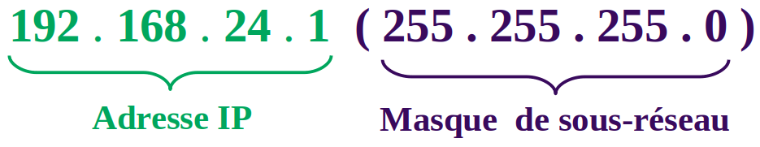

Adresse IPv4 locale et masque de sous-réseau
Une adresse IP locale identifie à la fois une machine et le réseau sur lequel elle est connectée. Pour distinguer la partie de l'adresse IP locale qui correspond au réseau de celle qui correspond à la machine, on a besoin du masque de sous-réseau.
Définition (Masque de sous-réseau) : Le masque de sous-réseau permet de distinguer
les deux parties de l'adresse IP : la partie réseau, puis la partie machine.
Ecriture de l'adresse IP et du masque de sous-réseau
En général, le masque de sous réseau est renseigné à la suite de l'adresse IP,
le masque de sous-réseau est lui aussi représenté sur 32 bits (c'est à dire 4 octets).
Le couple (adresse IP, masque de sous-réseau) se note de deux façons différentes :
| Première notation |
Deuxième notation |
| 192.51.24.1 (255.0.0.0) |
192.51.24.1/8 |
Pour la première notation, on écrit d'abord l'adresse IP, puis le masque de sous-réseau entre parenthèses.

Partie réseau et partie machine de l'adresse IP
Le masque de sous-réseau permet de distinguer les deux parties de l'adresse IP :
la partie réseau et la partie machine.
Le masque est constitué de 4 octets qui ne prennent que deux valeurs : 255 ou 0.
Les premiers octets du masque qui sont égaux à
255 indique que les octets correspondants dans
l'adresse IP font partie de la partie réseau.
Les octets suivants du masque qui sont égaux à
0 indique que les octets correspondant dans
l'adresse IP font partie de la partie machine.
Exemple d'adresse de classe A : Couple : 192.51.24.1 (255.0.0.0)
Pour cette adresse de classe A, la partie réseau est 192
et la partie machine est 51.24.1.
La deuxième notation : 192.51.24.1/8
signifie que les 8 premier bits correspondent
à la partie réseau puisque un seul octet (1 × 8 = 8 bits)
est consacré à la partie réseau.
Par complément les 24 (32-8) dernier bits correspondent à la partie machine.
Le masque de sous-réseau permet ainsi de déterminer le nombre de postes connectables dans un sous-réseau spécifique : on dispose de 24 bits pour l'écriture de la partie machine. On obtient donc
224 = 16 777 216 adresses machines, auquel on retranche 2,
car la première (192.0.0.0) et la dernière adresse (192.255.255.255) du réseau sont
toujours réservées.
Avec des adresses de classe A, on obtient finalement :
16 777 214 adresses utilisables
dans ce réseau.
Exemple d'adresse de classe B : Couple : 192.168.11.2 (255.255.0.0)
Pour cette adresse de classe B, la partie réseau est 192.168
et la partie machine est 11.2.
La deuxième notation : 192.168.11.2/16
signifie que les 16 premier bits correspondent
à la partie réseau puisque deux octets (2 × 8 = 16 bits)
sont consacrés à la partie réseau.
Par complément les 16 (32-16) dernier bits correspondent à la partie machine.
Le masque de sous-réseau permet ainsi de déterminer le nombre de postes connectables dans un sous-réseau spécifique : on dispose de 16 bits pour l'écriture de la partie machine. On obtient donc
216 = 65 536 adresses machines, auquel on retranche 2,
car la première (192.168.0.0) et la dernière adresse (192.168.255.255) du réseau sont
toujours réservées.
Avec des adresses de classe B, on obtient finalement :
65 534 adresses utilisables
dans ce réseau.
Exemple d'adresse de classe C : Couple : 192.168.0.1 (255.255.255.0)
Pour cette adresse de classe C, la partie réseau est 192.168.0
et la partie machine est 1.
La deuxième notation : 192.168.0.1/24
signifie que les 24 premier bits correspondent
à la partie réseau puisque trois octets (3 × 8 = 24 bits)
sont consacrés à la partie réseau.
Par complément les 8 (32-24) dernier bits correspondent à la partie machine.
Le masque de sous-réseau permet ainsi de déterminer le nombre de postes connectables dans un sous-réseau spécifique : on dispose de 8 bits pour l'écriture de la partie machine. On obtient donc
28 = 256 adresses machines, auquel on retranche 2,
car la première (192.168.0.0) et la dernière adresse (192.168.0.255) du réseau sont
toujours réservées.
Avec des adresses de classe C, on obtient finalement :
254 adresses utilisables dans ce réseau.
Classes d'adresse IP
Il existe cinq classes d'adresses IP.
Chaque classe est identifiée par une lettre allant de A à E.
Ces différentes classes ont chacune leurs spécificités quant à la répartition du nombre d'octets servant à identifier le réseau ou les ordinateurs connectés à ce réseau :
-
Une adresse IP de classe A dispose d'un seul octet pour la partie réseau
et de trois octets pour la partie machine.
-
Une adresse IP de classe B dispose de deux octets pour la partie réseau
et de deux octets pour la partie machine.
-
Une adresse IP de classe C dispose de trois octets pour la partie réseau
et de un seul octet pour la partie machine.
-
Les adresses IP de classes D et E correspondent à des adresses IP particulières.
| Classe |
Masque |
Partie réseau |
Partie machine |
Adresses utilisables |
| Classe A |
255.0.0.0 |
1 octet (8 bits) |
3 octets (24 bits) |
16 777 214 |
| Classe B |
255.255.0.0 |
2 octet (16 bits) |
2 octets (16 bits) |
65534 |
| Classe C |
255.255.255.0 |
3 octets (24 bits) |
1 octet (8 bits) |
254 |
Quiz 3